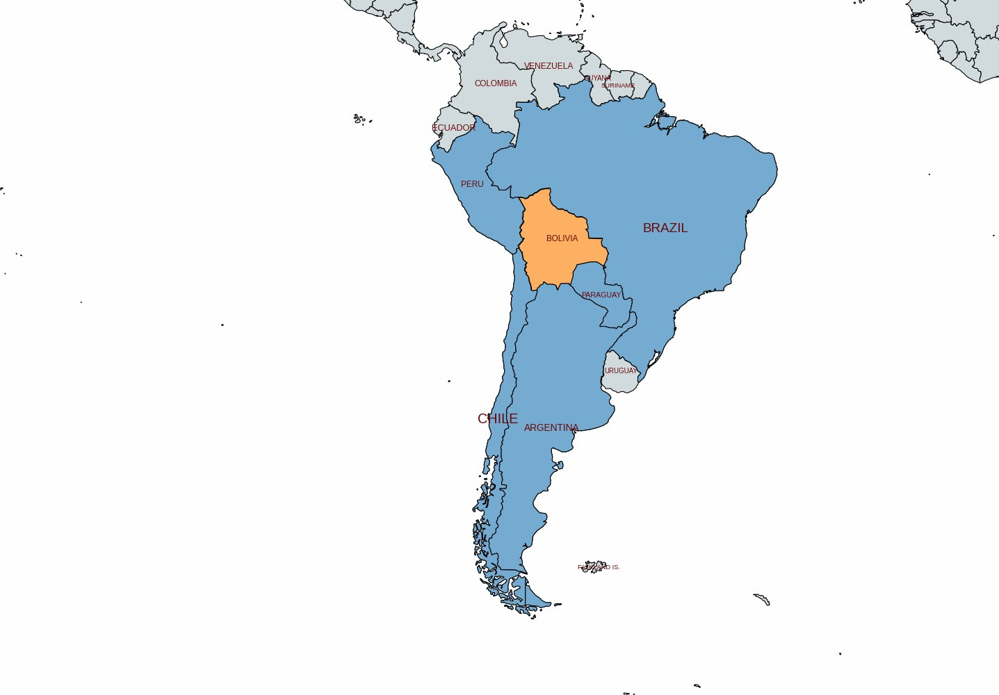
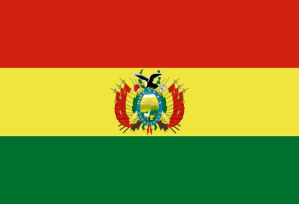
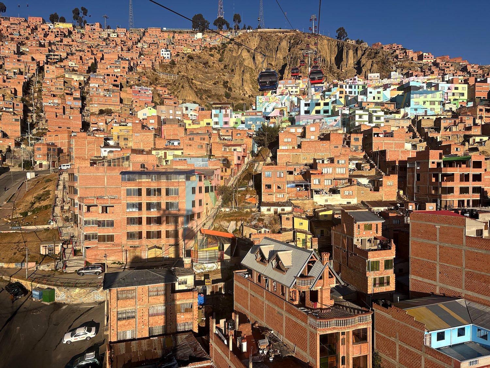
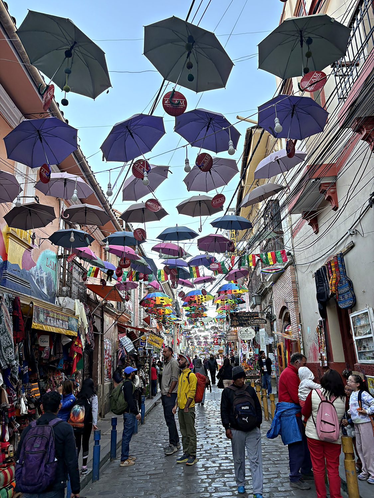
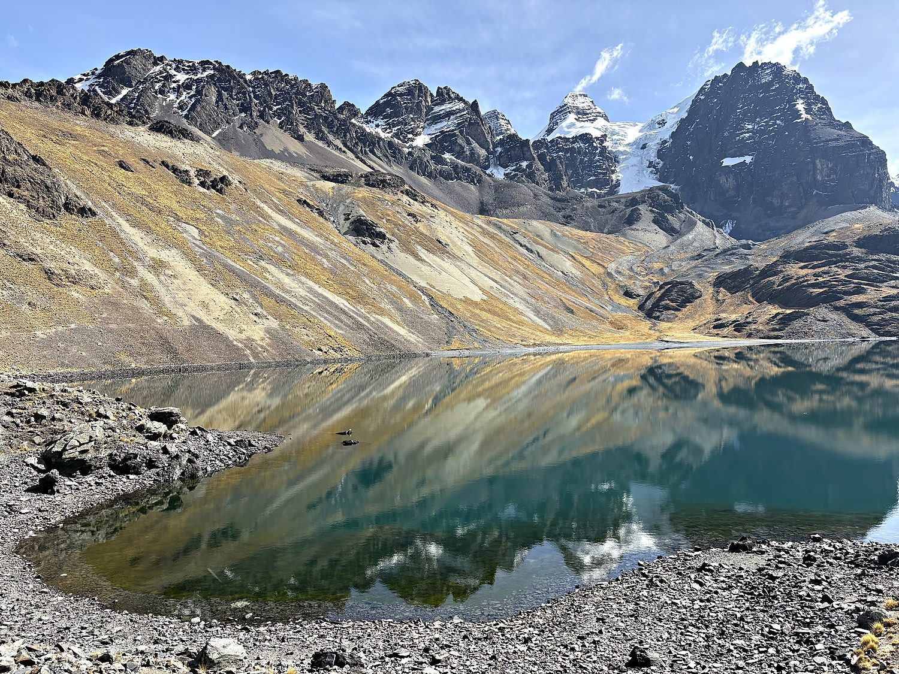

I visited Bolivia in August 2025 with my friend Allen. There is a pleasant madness that sets in on the Salar de Uyuni, and I recommend it to everyone. This is the largest salt flat on Earth, with some 4,000 square miles of blinding white nothing, the fossilized ghost of an ancient lake. Once a thin skin of rain settles over it, the whole expanse becomes a perfect mirror, so that the sky is above you and also, disconcertingly, below you, and the horizon dissolves entirely. Standing in the middle of it at sunset, the clouds burning overhead and reflected flawlessly at my feet, I enjoyed the specific vertigo of a man who can no longer confidently identify which way is up. At night it only escalated: the wind dropped, the water stilled to glass, and the entire Milky Way careened above and beneath us at once, as though someone had misplaced the ceiling of the universe. Bolivia, I was rapidly learning, does not do subtle.
Bolivia's beating heart is La Paz, the highest capital city in the world, draped improbably across a canyon at some 12,000 feet, with the even-higher city of El Alto sprawling over the plateau above it and the snow-capped bulk of Mount Illimani presiding over the whole scene. It is a city so steep that a conventional metro was written off as a lost cause. Instead, La Paz took to the air, building the world's largest urban cable-car network. This delightful fleet of gondolas swings commuters over the rooftops and offers them, for the price of a bus ticket, one of the greatest city views on the continent. Down in the valley, streets tumble past colonial churches, the government palaces of the Plaza Murillo, and markets selling absolutely everything. Up on the rim, El Alto hums with its own fierce Aymara energy.

To understand Bolivia, you have to understand a single mountain. In the 16th century, the Spanish discovered that a peak in the country's south (Cerro Rico, the “Rich Hill” near Potosí) was essentially made of silver. For the next two centuries, that mountain bankrolled the entire Spanish Empire, its ore flowing across the Atlantic to fund Europe's wars and inflate its economies. The cost was staggering and horrific: millions of Indigenous laborers and enslaved Africans were worked to death in its tunnels under a brutal system of forced labor. Potosí, once one of the largest and richest cities on the planet, became a monument to just how much human suffering can be dug out of a single hill. It is the original and defining example of Bolivia's cruel paradox: it is a land of almost unimaginable natural wealth whose people have seen shockingly little of it.

That paradox has shadowed Bolivia ever since. It took its name from the great liberator Simón Bolívar upon independence in 1825, then spent the following century losing pieces of itself to its neighbors. The most painful loss was its entire Pacific coastline, seized by Chile in the War of the Pacific in 1879, which left the country landlocked to this day. Bolivians have never gotten over it: the nation still maintains a proud navy that patrols Lake Titicaca and its rivers, and still observes an annual “Day of the Sea” to mourn the ocean it lost. It is also the most Indigenous country in the Americas, where a majority of people are Aymara or Quechua. This fact finally found political expression in Evo Morales, Bolivia's first Indigenous president, who started out as a genuinely transformative and popular figure. He then, in the time-honored regional tradition, developed an inconvenient allergy to leaving office.
Nothing captures modern La Paz quite like its cable cars. Confronted with a city stacked almost vertically up the walls of a canyon and packed with the colorful brick homes of El Alto spilling down the slopes, the government did the only sensible thing and took to the sky, stringing line after line of gondolas across the basin until it had built the highest and longest urban cable-car network on Earth. The opportunity to glide silently above the rooftops in one of these little pods, with the terracotta sprawl below and the Andes dead ahead, is one of the best travel bargains of South America. A world-class panorama is thrown in, free of charge, with your daily commute.

Tucked into the steep lanes of central La Paz is the Mercado de las Brujas, the Witches' Market, where the old Aymara spiritual world does a brisk retail trade right alongside tourist trinkets. Among the herbs, amulets, and folk remedies, its most famous – and most startling – offerings are dried llama fetuses. These are traditionally buried in the foundations of new buildings as an offering to Pachamama, the earth mother, to bless the construction and protect its workers. It is a vivid reminder that beneath Bolivia's Catholic surface runs a deep and unbroken current of Indigenous belief, in which the mountains are alive, the earth must be fed, and a bundle of coca leaves and a mummified baby llama are simply prudent home-improvement supplies.

Bolivia saves some of its most spectacular scenery for the very roof of the country. Rising just east of La Paz is the Cordillera Real, a wall of glaciated peaks soaring well above 6,000 meters, and cradled among them lie a string of impossibly clear glacial lakes fed by the meltwater of the high Andes. Allen and I hiked up Pico Austria, a 5,320m mountain which is a day hike from La Paz, and which most people use as an acclimatization hike before trying harder peaks. The jagged, snow-dusted summits of the range stood mirrored in the still turquoise water at an altitude that left us gasping after every few steps. The llamas and alpacas grazing along the shore regarded our wheezing with the serene, faintly pitying patience of creatures who long ago made their peace with the thin air.
